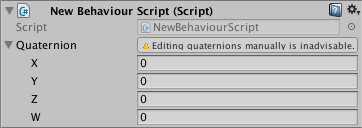

SerializedProperty.isExpanded
Description 描述
Is this property expanded in the inspector?
Serialized properties with child properties (e.g., arrays, custom serializable structs, or custom serializable classes) may be either expanded or folded up in the inspector to reveal or hide their children. The following example displays a note in the inspector when users expand a Quaternion property.
using UnityEditor; using UnityEngine;
[CustomPropertyDrawer(typeof(Quaternion))] public class QuaternionDrawer : PropertyDrawer { public override float GetPropertyHeight(SerializedProperty property, GUIContent label) { // use the default property height, which takes into account the expanded state return EditorGUI.GetPropertyHeight(property); }
public override void OnGUI(Rect position, SerializedProperty property, GUIContent label) { // draw the default property editor EditorGUI.PropertyField(position, property, label, true);
// display a warning to discourage users from manually editing child properties on a quaternion if (property.isExpanded) { position.height = EditorGUIUtility.singleLineHeight; position.xMin += EditorGUIUtility.labelWidth; EditorGUI.HelpBox(position, "Editing quaternions manually is inadvisable.", MessageType.Warning); } } }

Displaying a message when a Quaternion property is expanded.
Note that the value of this flag is shared across all instances of the serialized property in question that have the same property path and target type. For example, folding up a particular property in the inspector for a component will make the same property folded up in the inspector for all other instances of the same component type.